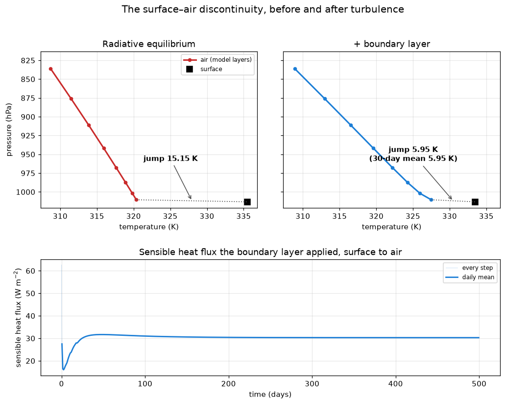
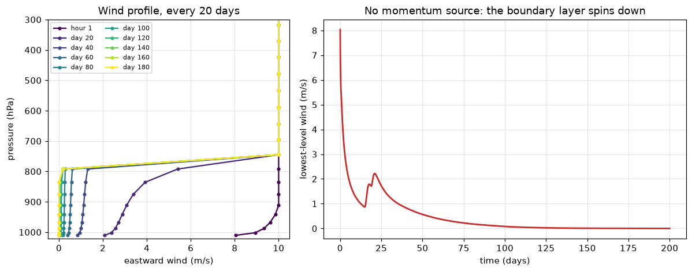

Turbulent heat exchange
Chapter 10 of the notes puts the surface and the air in contact. Up to now they have exchanged energy only by radiation, and page 4 derived what that leaves behind: in chapter 8’s gray radiative equilibrium the ground is warmer than the air touching it, by a finite jump. Page 7 found that jump by stepping a column — 15.15 K — and noted that nothing in a purely radiative column can remove it.
Real air in contact with a warmer surface does not sit still. It is heated from below, it becomes buoyant, and it mixes. This page adds the process that does that — a turbulent boundary layer — and watches the jump shrink. It also runs into a problem that every single-column model has, and fixing it is the better half of the page.
The column
Page 7’s gray column, unchanged — the tour_gray_lw table at diffusivity 2, 28 levels, a 2 m slab, 240 W m⁻² absorbed at the ground — plus one component: SimpleBoundaryLayer, the scheme of Frierson, Held and Zurita-Gotor (2006). It computes the turbulent fluxes of heat, moisture and momentum between the surface and the lowest model layer, and mixes them up through a boundary layer whose depth it diagnoses every step.
There is also one line you would not expect, and it is flagged in the code. Hold that thought until the column that stops moving.
The discontinuity, eroded
Two runs. The first is page 7’s column with no boundary layer, stepped 900 times at 12 hours, exactly as there. The second adds the boundary layer and steps hourly, 12 000 times — 500 days.
Why hourly? The purely radiative column’s equilibrium does not depend on the timestep: at 12 h and at 1 h it lands on the same 15.15 K. The turbulent column’s does. Stepped at 12 h its sensible heat flux settles at 33.4 W m⁻²; at 1 h, at 30.3; at 30 minutes, at 29.6. Only the last two agree, to about 2 %, so this page steps hourly. A timestep is part of a model’s configuration, and this is how you find out whether yours is short enough: halve it and see whether the answer moves.
This cell takes about two and a half minutes in a browser — 12 000 steps at about 12 ms each in Pyodide (measured with the JIT off, the native stand-in for the browser). The spinner is expected. The knob cells further down start from the equilibrium it finds, and are much quicker.

This is the figure the cell above produces. Live cells need WebAssembly; if your browser blocks it, the static version is here.
The jump falls from 15.15 K to 5.95 K. The boundary layer carries 30.3 W m⁻² of sensible heat from the ground into the air, and that heat no longer has to leave the surface as radiation. So the surface cools, from 335.53 K to 333.45 K. The lowest air warms, and the jump closes from both sides.
Look at the flux panel before moving on. Once the column has warmed, the flux settles to a flat line. The scheme chooses the depth of the boundary layer level by level, as the lowest height where the bulk Richardson number exceeds its critical value, and at equilibrium that depth holds at 2.5 km, step after step (scripts/experiments/tour_page8_measurements.py). It mixes dry static energy, c_p T + g z, so the air it mixes is pulled toward the dry adiabat rather than toward one temperature. Every number on this page is still a 30-day mean, which is what record.mean returns. At this equilibrium that is the same as the last step’s value, but it is the safe habit for a run that has not finished settling, and the knob runs below are shorter.
Page 7 said a Stepper returns the new state directly, rather than a rate, and that stepping.integrate’s second list was for them. This is the first page to fill it:
SimpleBoundaryLayer solves its vertical diffusion implicitly — it computes the profile at the end of the step directly, which stays stable for timesteps that would blow up an explicit rate. Its answer is a new temperature, humidity and wind, not a tendency, so it cannot go inside AdamsBashforth, which sums rates. It is called inside the same loop instead, after the tendency update, on the state the radiation and the slab have just produced. Both lists are in the loop page 7 printed; import inspect; print(inspect.getsource(stepping.integrate)) shows it again, with the one addition this page needs — the after_step hook, which the recorder above uses.
budgets.sensible_heat_flux reads surface_upward_sensible_heat_flux out of the state, and that quantity is a diagnostic of the boundary layer. It is the flux the scheme applied: evaluated after the implicit solve, from the temperature of the lowest layer at the end of the step, so the column’s heat budget closes to round-off. It is not a formula applied to the state afterwards, which would give a slightly different number. What you plotted is what the model did.
SlabSurface reads the same quantity as an input, and takes that heat out of the ocean. One number, written by one component and read by another, is how the surface’s energy budget and the atmosphere’s stay the same budget.
SimpleBoundaryLayer(surface_fluxes=...) takes one of three values, and which one you want depends on what else is in the column:
'bulk'(the default, used here) — the scheme computes the surface fluxes itself from its own exchange coefficient, applies them, and reports them as diagnostics.'external'— another component has computed the fluxes. They become inputs, and the scheme applies them as given.None— no surface exchange at all. The diffusion only mixes the column internally, with no-flux boundaries, and conserves every column integral exactly.
The trap is pairing 'bulk' with a component that also applies surface fluxes. Both then heat the lowest layer, and the surface loses the heat twice, with no error message. climt’s classic case is SimplePhysics(surface_fluxes=True), which computes and applies its own. It is a compiled component and does not run in this browser, but the trap is real wherever it does. A code exercise below has you watch the flux entries move between inputs and diagnostics as the mode changes.
The column that stops moving
That flagged line in the first cell: stepping.wind_relaxation(state, wind). Take it out, start the column with a 10 m s⁻¹ wind, and watch what happens to the wind. This run is 200 days, about a minute in a browser.

The figure the cell above produces.
The lowest-level wind falls from 10 to 4.9 m s⁻¹ in the first day, and to 2.1 by day five. It rises again for a while, to about 2 m s⁻¹ around day 20, as the warming column’s boundary layer deepens to about 790 hPa and mixes down some of the faster air above it. Then it creeps: 0.39 m s⁻¹ at day 60, and 0.001 by day 200. Above the boundary layer the wind does not change at all. There is no drag up there and nothing else acting, so it stays at 10 m s⁻¹ forever, cut off from the ground.
A single column has no dynamics. No pressure gradient, no Coriolis force, nothing that makes wind. The only thing acting on the wind near the ground is the boundary layer’s own surface drag, and drag only removes momentum. So whatever wind you set is an initial condition, and in this column initial conditions do not survive. Run it to 500 days from 0, 5 or 10 m s⁻¹ and all three end in the same equilibrium, with the same dead-calm surface.
Dead calm is not a small change. The bulk formula makes the heat flux proportional to the wind speed at the lowest level, and the heat flux falls from 30.3 to 12.8 W m⁻² while the jump grows back from 5.95 to 8.94 K. (Those are from 500-day runs. The cell above stops at 200 days and prints 12.9 and 8.97, with the surface still settling.) Even the 12.8 is not physics: the scheme never lets the wind speed it uses fall below 1 m s⁻¹, so the flux of a dead-calm column is the flux of that floor.
This is a GCM’s boundary-layer scheme being run in a configuration that starves half of it. That is what a column model is: every process that the missing dimensions would have supplied, you have to supply, or go without. Noticing which ones is the skill.
Giving it a wind
The fix is a momentum source: something that pushes the wind toward a value, the way the large-scale pressure gradient does in a real atmosphere. The simplest is Newtonian relaxation,
\[ \frac{du}{dt} = -\frac{u - u_\text{eq}}{\tau}, \]
which pulls the wind u toward a target u_eq on a timescale τ. Both parameters are physical: what you relax toward, and how fast. stepping.wind_relaxation builds this as a sympl component, and writes the two parameters into the state as fields of their own:
The same 10 m s⁻¹ start, now with the relaxation, for 60 days (about 15 seconds in a browser):
The wind persists. It does not reach 5 m s⁻¹ at the lowest level, and the gap is what the next section but one is about.
climt’s own examples hold the wind up by brute force. The last line of the time loop in examples/column_code_with_slab.py (line 120) is
state['eastward_wind'].values[:] = 3.and examples/gmd_radiative_convective.py does the same at line 118. That works. But the assumption lives in a line at the bottom of a loop, where nobody reading the component list will see it.
sympl.RelaxationTendencyComponent is the same idea done as a component. It returns a tendency like any other, so it composes with the radiation and the slab inside AdamsBashforth. It carries units. And it sits in the component list, where a reader looking for the assumptions will find it. (stepping.py subclasses it for one small reason: the stock version’s tendency units come out of pint as '1.0 meter / second ** 2', which unyt cannot parse. A small, real friction between two libraries.)
The timescale has to be chosen with care. It must be long compared with the timestep, or the relaxation becomes a hard reset — and past a point, with this integrator, an unstable one. It must be short compared with the run, or it is no forcing at all. At 24 h against a 1 h step and a 500-day run, it is neither.
The knob: wind speed
WINDS below — the speed the column is relaxed toward, in m s⁻¹. Tested from 2 to 10 m s⁻¹. Outside that range is untested.
Each run starts from the 5 m s⁻¹ equilibrium the headline cell found, changes the target, and steps 1000 hours (about 42 days) — about 15 seconds each in a browser, rather than two and a half minutes for another 500-day spin-up. That is enough for the jump and the flux: they agree with 500-day cold starts to within 0.01 K and 0.1 W m⁻². It is not quite enough for the surface temperature, which is still settling by a few tenths of a kelvin, so the cell does not quote it.
| target wind | lowest-level wind | surface − air jump | sensible heat flux | surface T |
|---|---|---|---|---|
| none (dead calm) | 0.00 m s⁻¹ | 8.94 K | 12.8 W m⁻² | 334.74 K |
| 2 m s⁻¹ | 1.48 m s⁻¹ | 7.85 K | 17.8 W m⁻² | 334.45 K |
| 5 m s⁻¹ | 3.35 m s⁻¹ | 5.95 K | 30.3 W m⁻² | 333.45 K |
| 10 m s⁻¹ | 6.15 m s⁻¹ | 4.39 K | 40.5 W m⁻² | 332.72 K |
These are 30-day means after 500-day cold starts, one per row, which is where the surface temperatures come from (scripts/experiments/tour_page8_measurements.py reproduces them). The cell above gives the same jumps and fluxes in a fraction of the time. More wind moves more heat, and the jump shrinks, but it does not vanish. At 10 m s⁻¹ it is still 4.4 K.
A forcing is not an assignment
Now run the same column the other way: no relaxation, and the wind assigned back to 5 m s⁻¹ at the end of every step, the way examples/column_code_with_slab.py does. About 15 seconds in a browser.
Both runs are “5 m s⁻¹”. Relaxing toward 5 m s⁻¹ leaves the lowest level at 3.35 m s⁻¹, because the surface drag is still acting on it and the relaxation only pulls. The assignment pins the lowest level at exactly 5.00, and so overrides the drag at the one level where the exchange happens. It moves 36.0 W m⁻² of heat against the relaxation’s 30.3, from the same nominal wind, and the jump is 5.18 K rather than 5.95.
Neither is wrong. They are different physical statements. The relaxation says: something aloft keeps pushing the air toward 5 m s⁻¹, and the ground drags on it. The assignment says: the wind at the lowest level is 5 m s⁻¹, whatever the ground does. A model reports the consequences of whichever you wrote. You should be able to say which one you meant.
The second knob: roughness length
ROUGHNESS below — the surface roughness length z0, in metres. Tested from 3.21 × 10⁻⁵ m (the scheme’s default, a smooth sea) to 0.1 m (rough land). Outside that range is untested.
Same route, the relaxation back at 5 m s⁻¹ — about 30 seconds in a browser:
From the scheme’s smooth-sea default to rough land, the sensible heat flux goes 23.3 → 30.3 → 43.3 W m⁻² and the jump 7.23 → 5.95 → 3.60 K. Look at the wind column too, though: the lowest-level wind falls as the surface gets rougher, 3.72 → 3.35 → 2.56 m s⁻¹. A rougher surface exchanges heat more efficiently, and it also drags harder on the wind that does the exchanging. The two knobs are not independent. Measured in a dead-calm column instead, the same three roughness lengths give only 8.6, 12.8 and 25.2 W m⁻².
Exercises
Physics
The sign of the surface change. Before looking at the headline numbers, predict: when the boundary layer is switched on, does the surface warm or cool? Explain it from the surface energy budget — what the surface receives and what it gets rid of, before and after — and then check against the cell. (It cools, by 2.1 K at 5 m s⁻¹. Why does the air above it not warm by more than it does? Print the whole temperature profile of both columns and compare.)
Why the jump does not close. At 10 m s⁻¹ the jump is still 4.4 K, not zero. What would have to change for it to close entirely? Think about what sets the bulk flux — the wind, the exchange coefficient, and the temperature difference itself — and what keeps supplying the surface with energy that the air cannot take away fast enough.
The relaxation timescale. The relaxation above uses τ = 24 h. Predict what happens at τ = 1 h and at τ = 100 days, then change
timescale_hoursinturbulent_column’s call tostepping.wind_relaxationand check. (Measured on 500-day runs: at 100 days the lowest wind is 0.66 m s⁻¹ and the column is all but dead calm — 12.8 W m⁻², as with no forcing at all. At 1 h the run fails: after 102 steps the radiation reports non-finite fluxes. The relaxation is a stiff term, and at τ equal to the timestep it is outside the region whereAdamsBashforthis stable. At τ = 2 h it runs, and the lowest wind reaches 4.16 m s⁻¹, most of the way to a hard reset.)
Code
Conservation. Build a column with
SimpleBoundaryLayer(surface_fluxes=None), give it some humidity and a wind, and call the boundary layer on its own ten times. Check withbudgets.column_enthalpythat the column’s enthalpy does not change — to round-off, not approximately. Then do the same with'bulk'and say where the difference went.The modes’ contracts. Print
SimpleBoundaryLayer(surface_fluxes=mode)’sinput_propertiesanddiagnostic_propertiesfor each of the three modes. The two surface-flux entries move: diagnostics under'bulk', inputs under'external', absent underNone. Explain why each is where it is.Speed or component? Relax
northward_windas well — callstepping.wind_relaxation(state, 5.0, quantity_name="northward_wind")and add it to the tendencies — and keep the eastward target at 5 m s⁻¹. Does the sensible heat flux respond to the wind speed, or to the eastward component alone? Predict it from the bulk formula before you run it.
Going deeper
The scheme’s equations — the bulk Richardson number that sets the boundary-layer depth, the K-profile of eddy diffusivity, and the one modification climt makes to the surface-layer coefficient — are in the SimpleBoundaryLayer user guide. The original is Frierson, D. M. W., I. M. Held and P. Zurita-Gotor (2006), “A gray-radiation aquaplanet moist GCM. Part I: static stability and eddy scale”, J. Atmos. Sci. 63, 2548–2566.